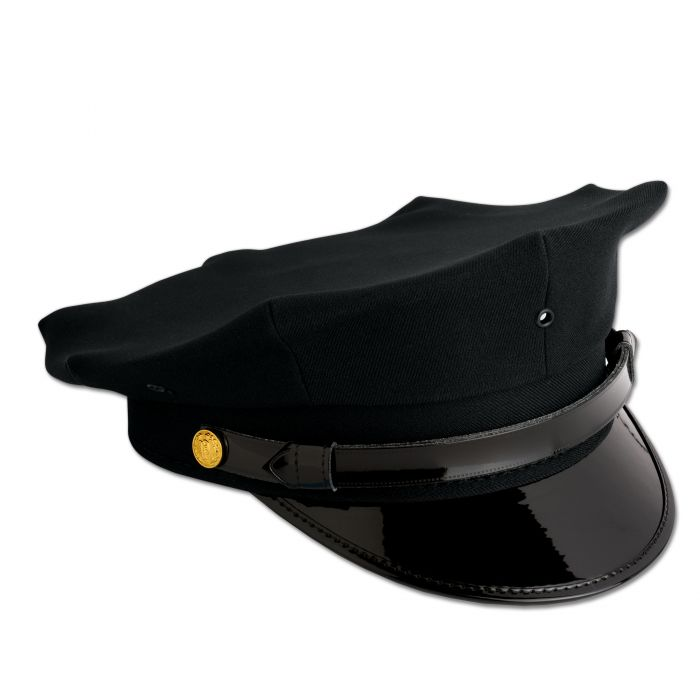

Professional Investigative and Protective Security Services
8 Point Solutions, LLC is a licensed and bonded private investigation agency, offering professional investigative and protective security services in the greater New York City area. Our veteran owned and operated boutique agency is based in Westchester County in the Village of Mamaroneck.
Our office is conveniently located near the Metro-North train station and offers free parking.
All matters are personally handled by the principals of our agency, ensuring our clients receive the highest level of attention, sensitivity, and the best results possible.
We offer a range of services including:
8 Point Solutions, LLC is operated by a team of retired NYPD officers with decades of experience in law enforcement, investigations, and security operations. We bring unparalleled knowledge of police procedures, the criminal justice system, and government processes, providing clients with trustworthy, high-quality investigative and protective security solutions.
The principals of 8 Point Solutions, LLC are retired uniformed members of the New York City Police Department with managerial and executive-level backgrounds, each with over 20 years of police experience. As such, we have extensive knowledge of police operations and investigations, the criminal justice system, and governmental processes.
8 Point Cap: Hats of the Finest
Q. When did the New York City police begin wearing the distinctively shaped hats they wear today?
A. The familiar eight-point hats were introduced in the early 1930's and replaced hats with circular crowns.
Read more about it here: https://www.nytimes.com/2001/02/04/nyregion/fyi-738972.html
We offer free confidential phone consultations to discuss your needs and our solutions. Call us at (914) 200-3828 or email us at info@8pointsolutionsllc.com.
Our office is located at:
650 Halstead Avenue, Mamaroneck, NY 10543
Office hours: by appointment only.
8 Point Solutions, LLC is licensed by the New York State Department of State.